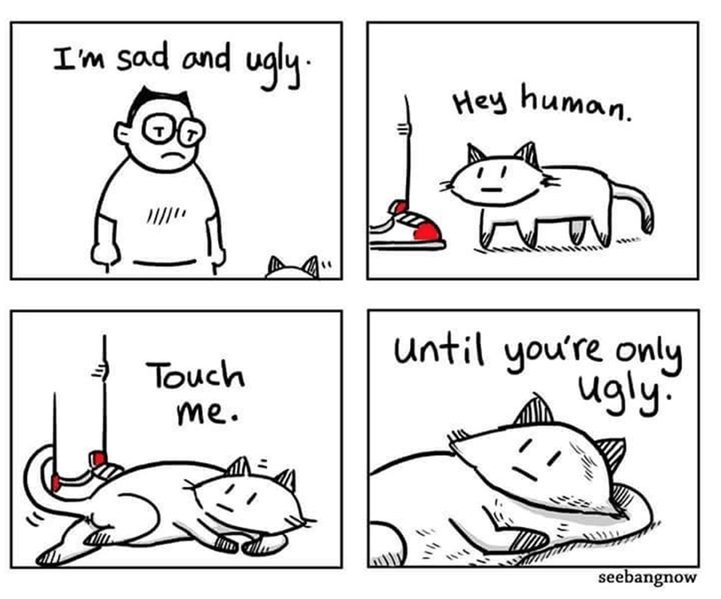

占星猫
「我不骗你」，猫跟了上来，「咱做这行可久了，有口皆碑。」
我说不好意思，可是我今天真的已经在拼多多上帮别人点过了。
猫说点过了也可以帮人…我是说，你今天不怎么开心，对不对。
我说对，好吧，但我的问题还没有大到需要相信一只猫来帮我算命。
猫说，我知道，但我不是来给你解决问题的，而是来给你提供问题的。我很专业啦。
我说什么问题。
猫说你感兴趣了对不对。
我就停下来盯着它笑。
「算命的领域是神秘主义和宿命论，骗子的领域是预言，这都不是我的工作。占星不提供答案，它提供问题——帮助你发现自己，成为自己的问题。」猫说。「让你的外在人格和内在本质一致的问题。」
「占星不关心真理，不关心宇宙，不关心开悟也不关心自我实现。它关心被虚假的价值观们困住的人，关心每一颗复杂敏感的心灵，关心你的快乐。占星带你越过陷阱，让你的行为遵循你的内在人格，使你区分出真正想要和被迫想要的东西。」猫说。
「简而言之，比如，占星不认为你是魔蝎座，你只是正在成为魔蝎座。它不解释你曾经的感觉或行为、暗示你拥有某种特质、拿别人的经验聊以自慰。它指向一个让你成长的方向。」猫说。
我说你说得好像很专业，但我不觉得会对我有什么用处。
猫说当然，当然。我说过，我可是专业的。这样吧，你可以摸我！
猫舔舔爪子擦了把脸，眯起眼睛望向一边。蹲坐着昂头躲我视线的样子如同在一个温暖的天气下晒太阳，尾巴摇来摇去，怯生生的样子可爱得像只小猫。好吧，可爱还能有什么平替的词汇呢。
我伸手去揉猫的头，它便顺势靠了过来。可爱呀，真可爱。十一月的主题是可爱。
